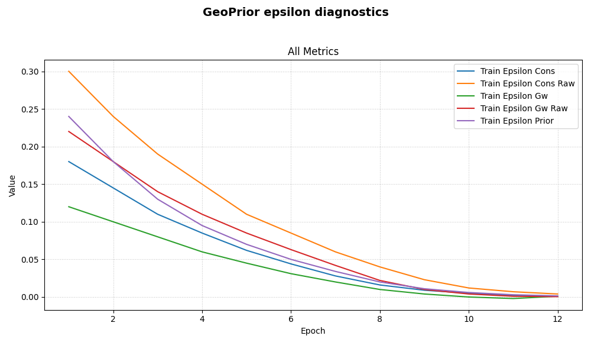

Note
Go to the end to download the full example code.
Plot epsilon diagnostics from a GeoPrior training history#
This example teaches you how to use GeoPrior’s
plot_epsilons_in helper.
Unlike the paper-oriented scripts in figure_generation/, this
function is a compact model-inspection utility. It focuses only on
the epsilon-style physics diagnostics stored in a training history.
Why this matters#
GeoPrior histories can contain many keys, but the epsilon terms are often the quickest way to inspect whether physics residual diagnostics are shrinking, stabilizing, or oscillating during training.
This helper makes that easy because it:
selects only
epsilon_*keys,ignores unrelated history terms,
plots them in one compact panel,
and uses safe log-like scaling.
Imports#
We call the real plotting helper from the package and feed it a compact synthetic history dictionary.
from __future__ import annotations
import tempfile
from pathlib import Path
import numpy as np
from geoprior.models import plot_epsilons_in
Build a compact synthetic history#
The real helper accepts a Keras History or a plain dict.
For the lesson page, a plain dict is enough.
We include:
epsilon diagnostics that should be plotted,
other loss keys that should be ignored by this helper,
one epsilon series that crosses zero so the requested log scale will safely fall back to
symlog.
epochs = np.arange(1, 13, dtype=int)
history = {
"loss": (
np.array(
[2.2, 1.8, 1.45, 1.18, 0.98, 0.84, 0.75, 0.69,
0.64, 0.60, 0.57, 0.55]
)
).tolist(),
"physics_loss": (
np.array(
[0.80, 0.63, 0.49, 0.37, 0.29, 0.23, 0.19, 0.16,
0.14, 0.13, 0.12, 0.11]
)
).tolist(),
"epsilon_prior": (
np.array(
[0.24, 0.18, 0.13, 0.095, 0.070, 0.050,
0.034, 0.020, 0.011, 0.006, 0.003, 0.0015]
)
).tolist(),
"epsilon_cons": (
np.array(
[0.18, 0.145, 0.11, 0.085, 0.062, 0.044,
0.028, 0.016, 0.009, 0.005, 0.002, 0.001]
)
).tolist(),
"epsilon_gw": (
np.array(
[0.12, 0.10, 0.08, 0.060, 0.045, 0.031,
0.020, 0.010, 0.004, 0.000, -0.002, 0.001]
)
).tolist(),
"epsilon_cons_raw": (
np.array(
[0.30, 0.24, 0.19, 0.15, 0.11, 0.085,
0.060, 0.040, 0.023, 0.012, 0.007, 0.004]
)
).tolist(),
"epsilon_gw_raw": (
np.array(
[0.22, 0.18, 0.14, 0.11, 0.085, 0.063,
0.042, 0.022, 0.010, 0.004, 0.001, 0.0005]
)
).tolist(),
}
print("History keys")
for k in history:
print(" -", k)
History keys
- loss
- physics_loss
- epsilon_prior
- epsilon_cons
- epsilon_gw
- epsilon_cons_raw
- epsilon_gw_raw
Plot the epsilon dashboard directly#
The helper automatically:
extracts non-validation
epsilon_*keys,groups them into one panel called
Epsilons,requests log-like scaling.
Because epsilon_gw touches zero and becomes slightly negative,
the underlying history plotter will safely use symlog instead
of a strict log scale.
plot_epsilons_in(
history,
title="GeoPrior epsilon diagnostics",
style="default",
)

Save the epsilon figure#
When savefig has no extension, the underlying plot helper adds
.png automatically.
[OK] Saved figure -> C:\Users\Daniel\AppData\Local\Temp\gp_sg_plot_epsilons_hqrlxxnz\epsilon_dashboard.png
Saved file
- C:\Users\Daniel\AppData\Local\Temp\gp_sg_plot_epsilons_hqrlxxnz\epsilon_dashboard.png
Show what the helper is selecting#
This helper is intentionally narrow: it ignores losses and only
cares about keys beginning with epsilon_.
Selected epsilon keys
- epsilon_cons
- epsilon_cons_raw
- epsilon_gw
- epsilon_gw_raw
- epsilon_prior
Learn how to read the epsilon panel#
A useful reading order is:
compare
epsilon_prioragainst the PDE-style epsilons;inspect whether all epsilon terms shrink together or whether one residual family plateaus;
inspect
*_rawterms separately when you want to compare the scaled and unscaled versions of a residual family.
This is why a dedicated epsilon plot is often clearer than a full all-metrics dashboard.
Why safe symlog matters here#
Epsilon diagnostics can get very small, touch zero, or even cross zero depending on how they are logged.
A strict log axis would be brittle in that case.
This helper instead requests log scaling and lets the base history
plotter fall back to symlog when needed.
That keeps the panel readable even near zero.
Why this page belongs in model_inspection#
This helper is not building a publication figure and it is not exporting a reusable artifact.
Its job is to inspect the training dynamics of the physics diagnostics themselves.
So it belongs naturally with the other model-inspection helpers.
A natural next lesson#
The clean next page after this is plot_physics_losses_in.py,
because it is the sister helper that focuses on physics loss terms
instead of epsilon diagnostics.
Total running time of the script: (0 minutes 2.201 seconds)